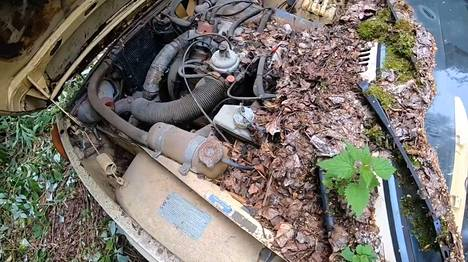
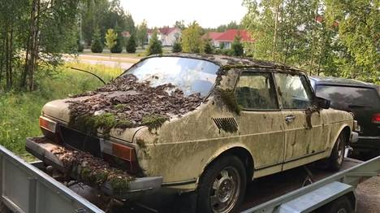
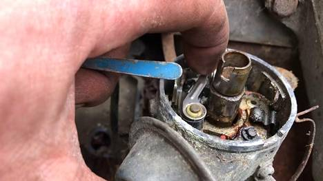
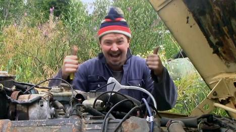
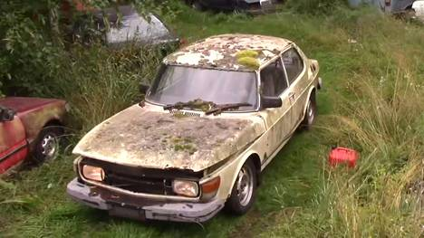

Petri löysi Seinäjoen metsään unohtuneen Saab 99:n
Metsässä jökötti 30 vuotta paikoillaan ollut sammalen peittämä Saab 99.
Auto oli alun perin Petri Walliuksen ystävän, jonka tiluksilta auto myös löytyi. Ajan saatossa kulkupeli oli kuitenkin unohtunut metsän siimekseen.

Tästä paikasta oli vähällä tulla Sammal-Saabin viimeinen leposija.
Kuva: Kuvakaappaus/Petri
Wallius
Autoalan harrastajana Wallius päätti kokeilla, lähtisikö sammal-Saab vielä pelittämään. Hän siirsi kulkupelin metsästä ja ryhtyi kunnostamaan sitä.
Näkymä 30 vuotta metsässä viettäneen Saabin konepellin alla oli lohduton, mutta se ei Petri Walliusta
pidätellyt.
Kuva: Kuvakaappaus/Petri Wallius
Pelkkä Saabin siirtäminenkin tuotti kuitenkin haasteita.
– Auto oli todella lujasti jumissa ja uponneena maahan. Jouduimme irrottelemaan sitä traktorin avulla, Wallius kertoo.
Sammal-Saab kulki metsästä huoltopaikalle peräkärryn kyydissä.
Kuva: Kuvakaappaus/Petri
Wallius
Kun auto oli saatu siirrettyä, oli vuorossa muun muassa sytytystulppien vaihtaminen ja kaasuttimen putsaaminen. Pienen fiksailun jälkeen auto käynnistyi ja lähti kuin lähtikin liikkeelle.
– Aika pienellä vaivalla se lopulta lähti käyntiin. Monesti auto voi olla lujemmassakin, Wallius kertoo.
Petri Wallius teki useita huoltotoimenpiteitä Saabin konepellin alle ja vaihtoi autoon muun muassa uuden akun,
tulpat ja virranjakajan katkojien kärjet.
Kuva: Kuvakaappaus/Petri Wallius
Hän kuvailee tunnelmaa sanoinkuvaamattomaksi.
– Se on aina sellainen hetkellinen riemunkiljahdus, kun auto lähtee liikkeelle. Kyllä se lämmittää sydäntä.
Tunnelma oli käsinkosketeltava, kun Sammal-Saab viimein hörähti käyntiin.
Kuva: Kuvakaappaus/Petri
Wallius
Vielä autossa on kuitenkin kunnostettavaa, jos sillä haluaa Suomen teillä ajella. Walliuksen mukaan suurin ongelma on Saabin ruostevauriot.
Sammal-Saab ei ole ensimmäinen Walliuksen kunnostama kulkupeli. Hänellä on nimittäin YouTube-kanava, johon hän kuvaa autonkunnostusvideoita.
Wallius kertoo aikovansa kunnostaa Saabin lailliseen kuntoon, jos vain motivaatio riittää.
– Riippuu siitä riittääkö itsellä motivaatio ja katsojilla kiinnostus projektia kohtaan.
Petri Wallius aikoo korjata Sammal-Saabin liikennekuntoon, mikäli katsojilla riittää kiinnostusta projektia
kohtaan.
Kuva: Kuvakaappaus/Petri Wallius
Alkuperäinen julkaistu: 23.8.2019 7:55
Alkuperäinen lähde: https://www.is.fi/autot/art-2000006213105.html
Alkuperäinen teksti: Maria Erma